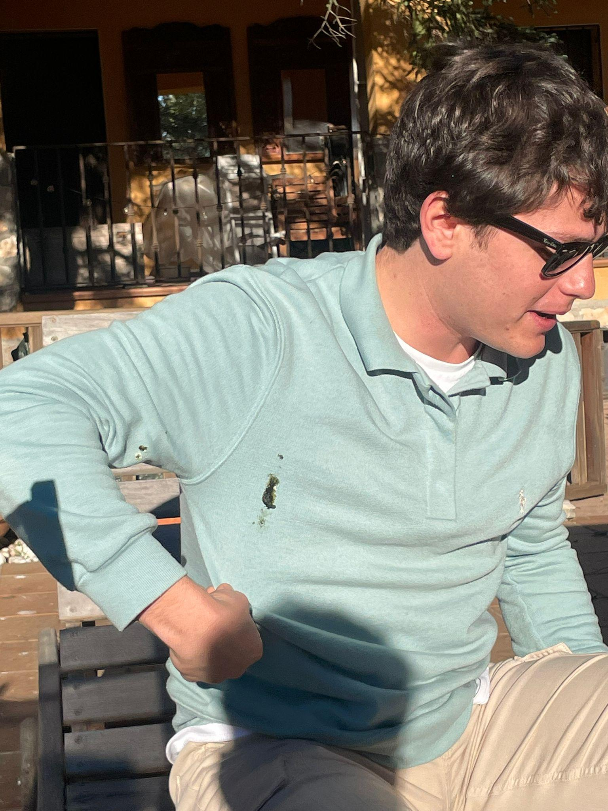
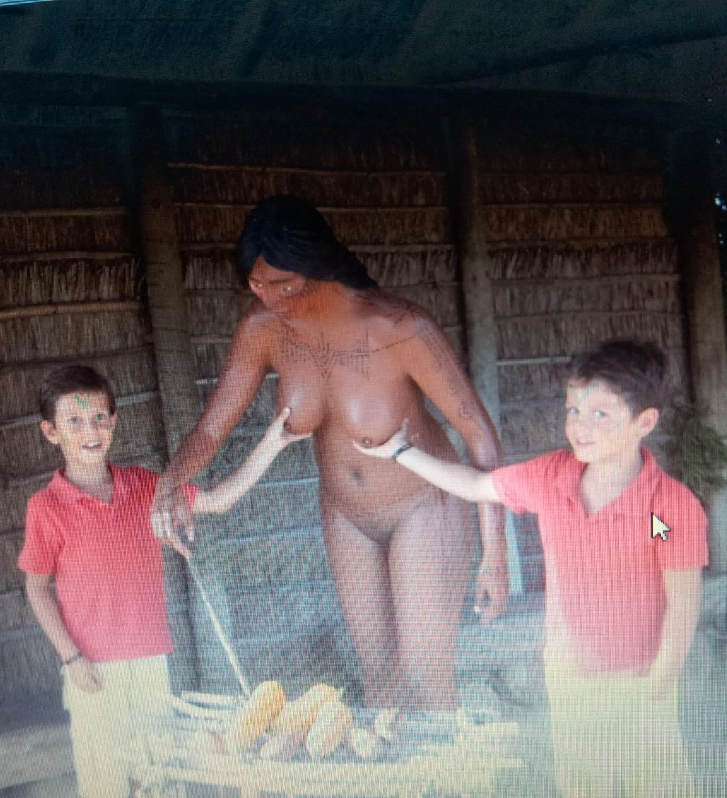
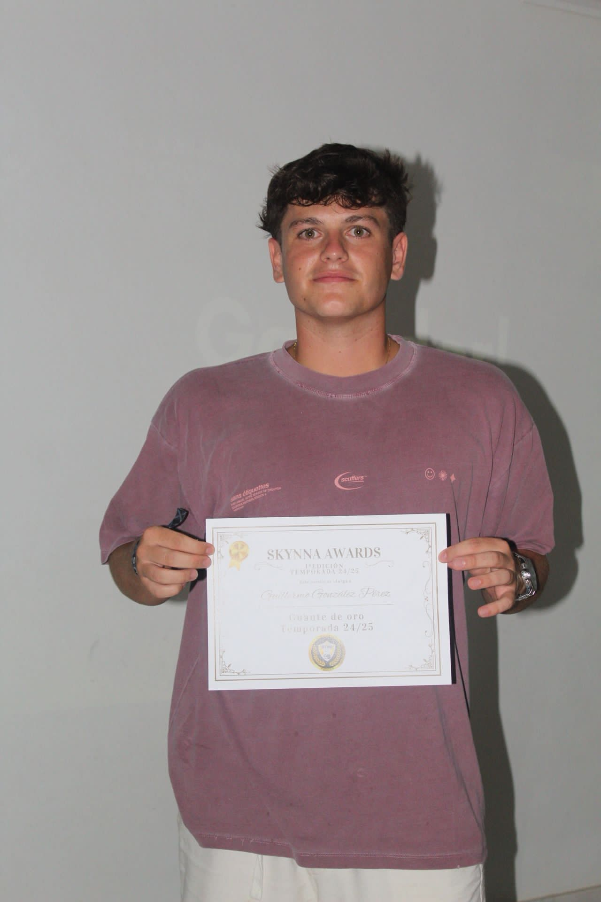
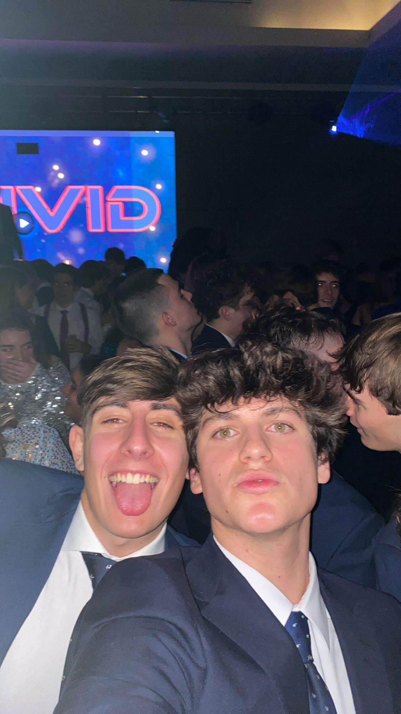
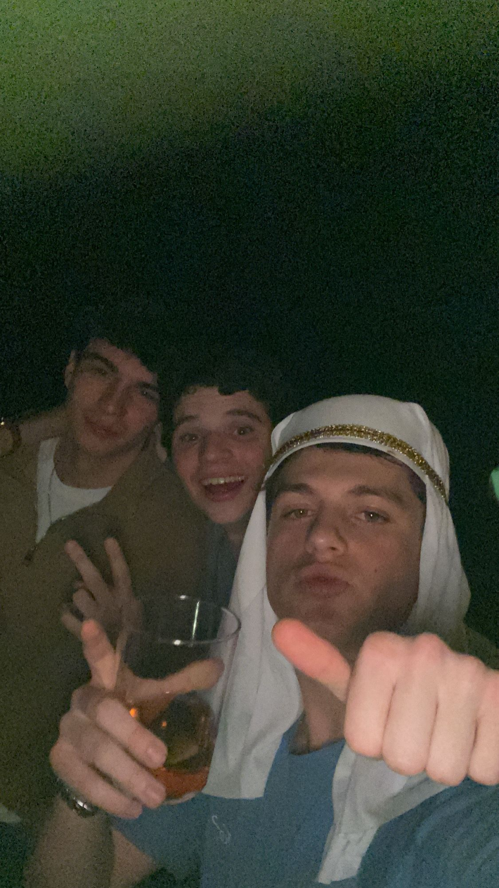
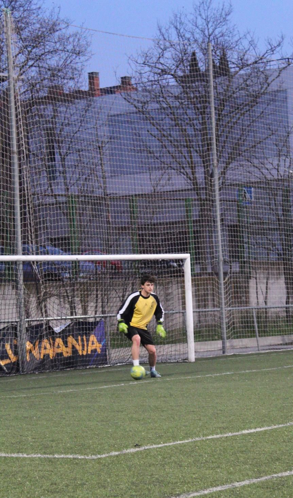

Guillermo
Portero | Dorsal 13
Qué privilegio tener a Guille, nuestro eterno 13, un portero irrepetible capaz de transformar un
simple córner a favor en una escena de máxima tensión. Bajo palos es puro sentimiento: cuando grita
que la pelota es suya, parece más un gesto de cortesía que de autoridad, dejándola pasar como quien
no quiere robar protagonismo al rival.
Sus fallos no son fallos, son puro espectáculo, pequeñas dosis de intriga para mantener el marcador vivo y el corazón en vilo. Practica un fair play tan elevado que a veces prefiere “colaborar” con el delantero antes que arruinar la emoción.
Un portero que puede hacer milagros… pero que nunca nos permite relajarnos, porque en cada balón aéreo nos recuerda que su verdadera especialidad es mantenernos sufriendo hasta el último segundo.
Sus fallos no son fallos, son puro espectáculo, pequeñas dosis de intriga para mantener el marcador vivo y el corazón en vilo. Practica un fair play tan elevado que a veces prefiere “colaborar” con el delantero antes que arruinar la emoción.
Un portero que puede hacer milagros… pero que nunca nos permite relajarnos, porque en cada balón aéreo nos recuerda que su verdadera especialidad es mantenernos sufriendo hasta el último segundo.
Galería





